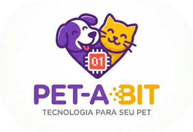
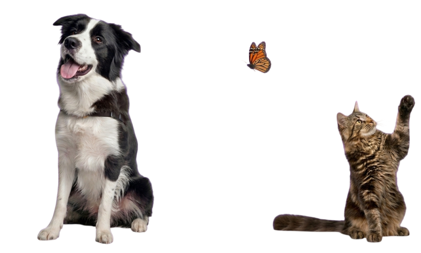

Compreendemos profundamente que o seu pet é muito mais do que um animal de estimação; ele é um membro amado da sua família, que enche seus dias de alegria e afeto incondicional. É natural que você busque sempre o melhor para ele, e sabemos que encontrar produtos e cuidados que transmitam verdadeira segurança pode ser um desafio no dia a dia.
Aqui, nós abraçamos essa mesma paixão e transformamos a sua preocupação em tranquilidade. Nosso compromisso é oferecer um ambiente onde você se sinta totalmente em casa, acolhido e compreendido em cada detalhe dessa jornada tão especial que é cuidar da saúde e do bem-estar de quem você ama.
Para solucionar essa busca constante pelo melhor, criamos um espaço pensado exclusivamente para a felicidade do seu melhor amigo. Nossa seleção de soluções é feita com um rigoroso padrão de qualidade e imenso carinho, garantindo que tudo o que chega até as patinhas dele seja extremamente seguro, confiável e cheio de amor.
Sinta-se confortável para explorar nosso site com a absoluta certeza de que estamos aqui para proteger e mimar o seu pet como se fosse o nosso. Com a nossa dedicação, você ganha a segurança necessária para focar no que realmente importa: curtir momentos inesquecíveis e repletos de carinho ao lado do seu companheiro fiel.
